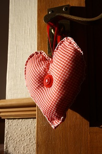
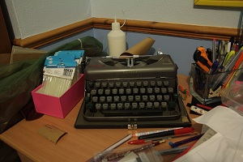

date stamp gift wrap
January 4th, 2011 § 29 Comments
Happy New Year! Another year of merriment has begun! There are many special dates to celebrate this year: birthdays, anniversaries, and of course, all of our favorite holidays. 
{kind=link}
Excited for what’s to come in 2011, I’ve moved the year forward on my printy-dater as you probably have on yours, too. I figured, why not commemorate our most special occasions this coming year with date-stamped gifts? 
There will be lots of gift-giving in store this year, so wrap those gifts in these very custom, personal gift wrap stamped with the celebrant’s or occasion’s special date. I’ve made some samples to show you just how charming date-stamped gift wrap could be. Even on very modest kraft paper (I picked up a generous 12-ft roll for $1 at the dollar store), patterns like stripes, grid, blooms, and herringbone look very well put together.
I have to admit, the fussiest pattern is the herringbone, so you have to give yourself time when creating it. I lightly drew 3/4″ x 1/4″ guides with pencil just to be sure I kept my printy-dater aligned. The simpler patterns are the grid (I drew 1″ square guides), stripes (lines are 2″ apart), and the blooms (which I stamped on randomly). Just one tip: use the index finger of your opposite hand to press the foot of the printy-dater to keep it in place when stamping.
Of course, the fun part is you can make any pattern on any type of paper you choose. Enjoy all the wonderful days to come in 2011!